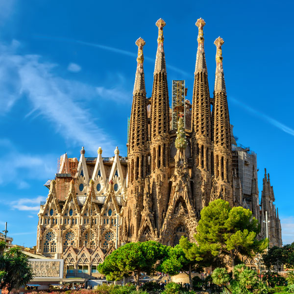
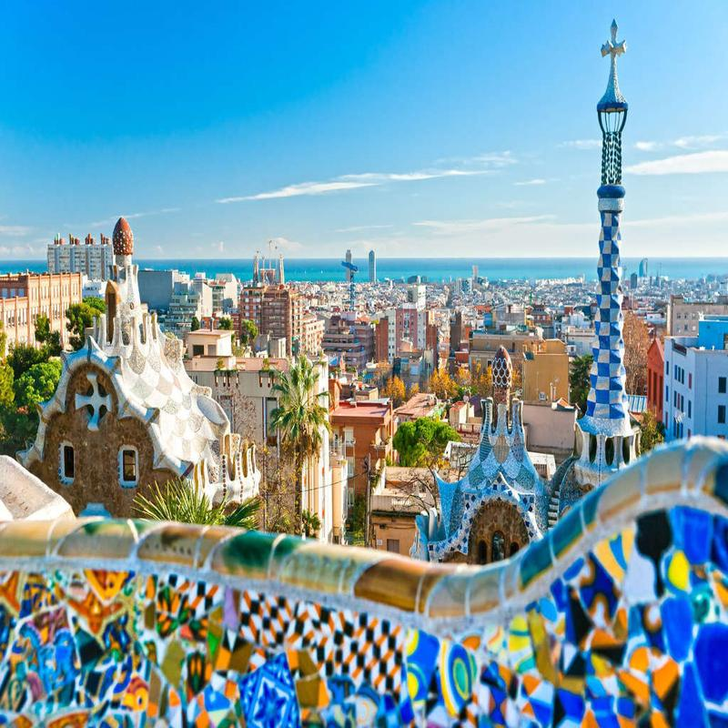
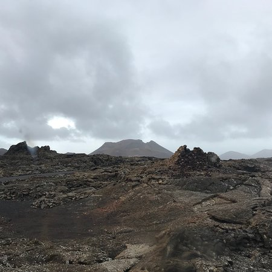

---
Sites that you cannot miss!
Possibly one of the most influential counties in regards to culture and heritage; Spain is a place that everyone must see in their lifetime. From the beaches in Tenerife to the famed Casa Milà in Barcelona, the list of cultural experiences available to you in Spain is endless.
A bit about the geography of Spain
Spain is located in southwestern Europe. It occupies most of the Iberian Peninsula and includes a small exclave inside France called Llívia as well as the Balearic Islands in the Mediterranean, and also the the Canary Islands in the Atlantic Ocean, and five places of sovereignty (plazas de soberanía).
Places to see
With so many monuments, museums and sites on offer, I will list just a few things that you cannot miss out on your trip to Spain...
Sagrada Família

The Sagrada Famílía is a large unfinished Roman Catholic church in Barcelona which was designed by Catalan architect Antoni Gaudí. Gaudí's work on the building is part of a UNESCO World Heritage Site and in November 2010 Pope Benedict XVI even consecrated and proclaimed it a minor basilica, as distinct from a cathedral, which must be the seat of a bishop. It is something that can't be left out on your trip to Spain!
Park Güell

The Park Güell is a public park system composed of gardens and architectonic elements located on Carmel Hill, in Barcelona, Catalonia. Carmel Hill belongs to the mountain range of Collserola. Park Güell is located in La Salut, a neighborhood in the Gràcia district of Barcelona. The park was built between 1900 and 1914 and was officially opened as a public park in 1926. In 1984, UNESCO declared the park a World Heritage Site under "Works of Antoni Gaudí".
Timanfaya National Park

Timanfaya National Park is a national park in the southwestern part of the island of Lanzarote, Canary Islands. It covers parts of the municipalities Tinajo and Yaiza. The area is 51.07 square kilometres. The parkland is entirely made up of volcanic soil. The statue "El Diablo" by César Manrique is its symbol.